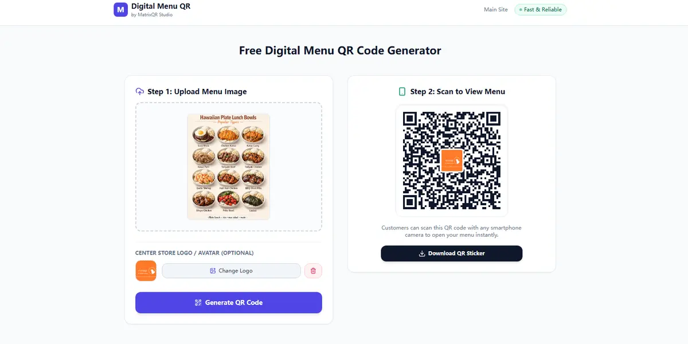

How to Add a Custom Logo to Your QR Code Menu (2026 Guide)
MatrixQR Digital Menu Generator now officially supports Custom Logo Integration. Restaurant owners can upload brand logos directly in the browser canvas without sending graphics to a remote server—combining brand trust with 100% client-side privacy.
Generic, unbranded black-and-white QR codes are easily overlooked by restaurant patrons and can even spark cybersecurity concerns like QR phishing (quishing). By embedding your official restaurant logo into the center of a digital menu QR code, you instantly build customer trust, increase scan rates, and elevate your dining table presentation.

Why Branding Your Digital Menu QR Code Matters
In modern hospitality, every physical touchpoint reflects your restaurant brand. According to industry UX benchmarks, adding recognizable visual elements like logos to QR codes yields significant advantages:
- Higher Scan Rates: Branded QR codes achieve up to 30% higher interaction rates compared to generic matrix codes.
- Enhanced Customer Security: Patrons can visually confirm the QR code belongs to your venue before scanning.
- Cohesive Aesthetic: Seamlessly matches table talkers, acrylic stands, and printed menu designs.
All performance claims in this article are verified against the official MatrixQR web application architecture (verified 2026-09-18). MatrixQR processes logo overlays using HTML5 Canvas Web APIs entirely inside your browser sandbox.
Comparison: Branded QR Menu Solutions (2026)
| Platform | Custom Logo Support | Data Privacy | Pricing Tier | Best For |
|---|---|---|---|---|
| MatrixQR Menu | ✅ Free (In-browser rendering) | Zero server upload (100% Client-side) | 100% Free | Privacy-focused restaurants & cafes |
| QR Code Monkey | ✅ Yes | Server-side rendering | Freemium | Marketing agencies |
| Beaconstac | ✅ High | Cloud tracking database | Paid SaaS ($15+/mo) | Enterprise restaurant chains |
| Unitag | ✅ Yes | Cloud analytics | Freemium | General marketing campaigns |
How MatrixQR Preserves Privacy While Adding Custom Logos
Most custom QR generators upload your logo image to their server, process it on the backend, and store your business assets. MatrixQR takes a radically different engineering approach:
- Client-Side Canvas Processing: Image resizing, centering, and error-correction adjustments happen locally in your browser memory.
- Automatic Error Correction Boost: When a logo is inserted into the center, MatrixQR automatically upgrades the Reed-Solomon error correction level (Level H) to guarantee 100% scannability.
- Vector & High-DPI Output: Export high-resolution PNG or crisp SVG formats suitable for large-format commercial printing.
Step-by-Step Guide: How to Create a Menu QR Code with a Logo
Follow these simple steps to generate your branded digital menu QR code in seconds:
-
Access the Digital Menu Tool
Visit https://menu.matrixqr.cc/ in any modern desktop or mobile browser. -
Upload Menu Image / Enter Link
Select your menu image file or enter your digital menu hosted URL. -
Add Your Custom Logo
In the customization panel, upload your restaurant's logo (PNG, JPG, or SVG). -
Real-time Preview & Adjustment
Preview the generated QR code instantly with the embedded logo centered automatically. -
Export for Print
Click Download QR Code to save print-ready assets for your table tents or acrylic stands.
Always use transparent PNG or SVG logo files with clear contrast against the QR background. Always perform a test scan with both iOS and Android cameras before sending designs to full-scale commercial printing.
Key Benefits: MatrixQR Menu Generator vs SaaS Alternatives
| Evaluation Feature | MatrixQR Digital Menu | Traditional SaaS Platforms |
|---|---|---|
| Logo Upload Privacy | ❌ Never leaves local device | ⚠️ Stored on remote server |
| Subscription Fees | ✅ $0.00 Forever | ❌ Monthly subscription required |
| QR Expiration Risk | ✅ Never expires (Static payload) | ⚠️ Expires if subscription ends |
| Print-Ready Resolution | ✅ High-DPI Vector/Raster | ⚠️ Vector restricted to paid plans |
Frequently Asked Questions (FAQ)
Will adding a logo make my QR code harder to scan?
No. MatrixQR automatically utilizes high error correction levels (Level H, up to 30% damage endurance) to ensure the logo center block does not hinder smartphone camera parsing.
Does MatrixQR charge extra for custom logos?
No. The custom logo feature is 100% free with no watermarks, account registrations, or hidden subscriptions.
Does MatrixQR store my uploaded logo or menu data?
No. MatrixQR operates entirely on client-side Web APIs without backend telemetry or database storage.
Conclusion
Adding a custom logo to your digital menu QR code is one of the easiest ways to improve table branding and patron trust. With MatrixQR's latest update, hospitality operators no longer need to compromise between professional visual customization and client-side data privacy.
Ready to upgrade your dining experience? Visit MatrixQR Digital Menu App today and generate your custom-branded menu QR code in seconds.